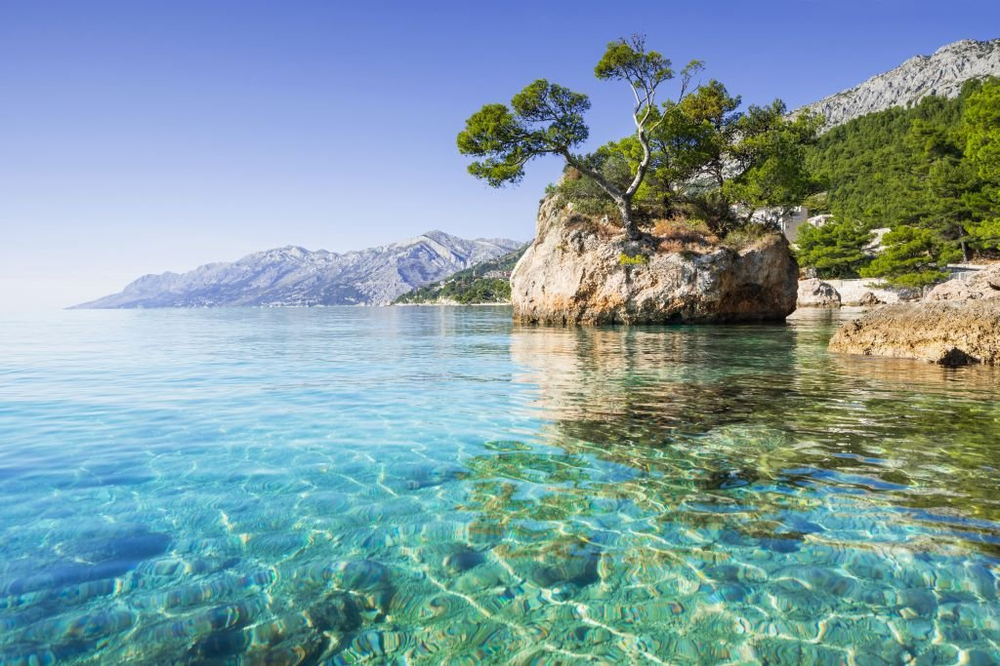
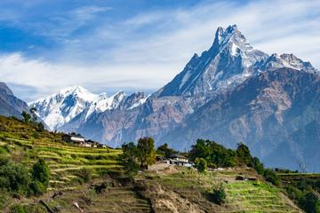

Prebivališča
Trenutno je znanih okrog 3.150 vrst kač, ki jih združujemo v 456 rodov. Živijo na vseh celinah, razen Antarktike in večine manjših otokov.

Puščavi
Pribivajo tudi po neznosnih okoljih kot so puščave, kjer ni skoraj nič vode za preživetje.

Morju
Prebivajo tudi v odprih ter temnih vodah kot so naprimer morva ter oceani.

Himalaji
Prebivajo tudi v visikogorjih kot so Himalaja, Alpe, kjer primanjkuje kisika.